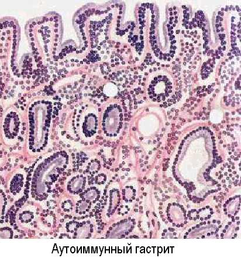
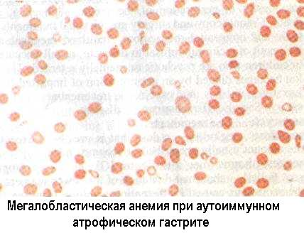
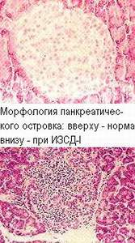
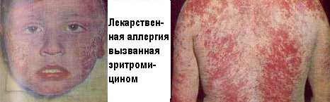

Цитотоксические реакции при органоспецифических аутоиммунных заболеваниях
Хотя подробное рассмотрение вопросов аутоиммунитета относится к отдельной части обзора, упомянем, что цитотоксические реакции играют ведущую роль в патогенезе таких органоспецифических поражений, как инсулинозависимый сахарный диабет, симпатическая офтальмия, факогенный увеит, аутоиммунные апластические анемии, синдром Шихана, вульгарная пузырчатка, аутоиммунный атрофический гастрит. При некоторых формах диффузного гломерулонефрита у человека (хронический мембранозный гломерулонефрит, болезнь Бергера, болезнь Шёнляйн-Геноха) и при экспериментальных нефритах у животных имеются цитотоксические комплементзависимые реакции против белков трансцитотических пузырьков, либо щеточной каймы эпителия клубочков, или, наконец, белков эндотелия клубочков.

...
...
Большое значение имеют аутоиммунные цитотоксические реакции против внеклеточных фиксированных антигенов. В этом случае абсолютная органоспецифичность утрачивается. Так, цитотоксические IgG обусловливают клеточную и комплементзависимую реакцию против коллаген-ассоциированного гликопротеида базальных мембран клубочков почек при злокачественном подостром гломерулонефрите с полулуниями у человека. Аналогичный процесс может быть экспериментально вызван иммунизацией (см. выше).

При синдроме Гудпасчера аутоиммунная цитотоксическая реакция поражает базальные мембраны как почек, так и легких. При болезни Шенляйн-Геноха аутоиммунный цитотоксический процесс повышает порозность базальных мембран капилляров, что ведет к вазопатии, а у 30% больных может дополняться нефропатией, сходной с описанными выше.
Так называемое сверхострое отторжение трансплантата (при несовместимости по антигенам ГКГС 1 класса и по экспрессируемым в почках антигенам AB0) также является не реакцией ГЗТ, как другие формы трансплантационного иммунитета, а органоспецифичной цитотоксической реакцией.
Диагностика цитотоксических реакций требует открытия и измерения титров специфических циркулирующих антител. Это достигается на основе реакции связывания комплемента (РСК, см..Е.Кебот, М.Мейер, 1968) или менее чувствительных реакций: непрямой гемагглютинации по П.Бойдену (РНГА), иммунопреципитации, в том числе - в агаровом геле по Р.Ухтерлони (1964) и иммунодиффузии.(А.И.Гусев, 1966). Цитотоксические аутоантитела в тканях могут быть локазизованы с помощью иммунофлюоресцентного анализа по А.Кунсу-М.Каплану (1951), а в биологических жидкостях - методами иммуноферментного (ИФА) и радиоиммунологического (РИА) анализа.
|
|
|
|
|
|